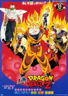

Goku es un extraño y alegre niño que pasa sus días cazando y comiendo hasta que un día conoce a Bulma, una chica muy linda, inteligente y que solo piensa en chicos. Bulma está buscando las Dragon Balls, unas esferas mágicas que se dice que si se reúnen las siete, se te concederá cualquier deseo, ¡y Goku tiene una que le dejó su abuelo como recuerdo! Esto será el inicio de una gran aventura.

Villanos terroríficamente malvados de los rincones más oscuros del espacio y el tiempo se enfrentan con la Tierra, y Goku, el guerrero más fuerte del planeta, es todo lo que se interpone entre la humanidad y la extinción. Acompañado en la batalla por los valientes Guerreros Z, Goku viaja a reinos lejanos y peligrosos en busca de los poderes mágicos de las siete Dragon Balls... ¡y de una buena pelea!
Muchos años después del combate contra Boo, Pilaf al fin logra cumplir su objetivo de reunir las Dragon Balls, pero algo no va bien ¡y Goku se convierte en niño de nuevo!
Villanos terroríficamente malvados de los rincones más oscuros del espacio y el tiempo se enfrentan con la Tierra, y Goku, el guerrero más fuerte del planeta, es todo lo que se interpone entre la humanidad y la extinción. Acompañado en la batalla por los valientes Guerreros Z, Goku viaja a reinos lejanos y peligrosos en busca de los poderes mágicos de las siete Dragon Balls... ¡y de una buena pelea!
Vuelve Dragon Ball con una nueva serie tras muchos años. Nuevos enemigos, nuevas y poderosas formas, y nuevos personajes que darán forma al futuro de los conocidos personajes.
¡Emociónate, disfruta y diviértete con Son Goku, Vegeta, Gohan y el resto de sus compañeros!
Goku y compañía llevaban una vida tranquila cuando de repente se volvieron pequeños debido a una conspiración. Cuando descubren que la razón de esto puede estar en un mundo conocido como el "Reino de los Demonios", un misterioso joven Majin llamado Glorio aparece ante ellos.
| Número | Portada | Nombre | Sinopsis | Fecha de Publicación |
|---|---|---|---|---|
| #1 | La Leyenda de Shen Long | En un mundo paralelo, el Rey Gourmeth está buscando las Esferas del Dragón para saciar su hambre. Mientras sus dos secuaces afirman ser leales en su búsqueda de las esferas, en realidad están usando mucho del poder del ejército de Gourmets para purgar la tierra de los preciosas "Piedras Ricas" para su propia riqueza personal. Una joven llamada Pansy, que vive en el pueblo que rodea el castillo de Gourmets, ha tenido suficiente se ha hartado de tanto abuso y decide buscar ayuda de Muten Roshi, el gran maestro. Goku se encuentra con una joven en busca de las esferas. Bulma le explica que el recuerdo de su abuelo es realmente la Esfera del Dragón de Cuatro Estrellas. Goku va con ella a la Montaña Baozi, para descubrir que la esfera ha sido hurtada por los secuaces de Gourmets. Goku y Bulma los persiguen en un avión, pero son derribados por un misil. | 20 de diciembre de 1986 | |
| #2 | La Princesa Durmiente del Castillo Embrugado | Son Goku se dirige a Kame House para entrenar con Kame-Sen'nin, pero cuando llega, este está "ocupado". Goku le grita al oído y finalmente capta su atención. Poco después, Krilin llega a la isla y solicita que Kame-Sen'nin lo tome como estudiante también. Después de un soborno, Kame-Sen'nin dice que aceptará a uno de ellos como estudiante, pero solo el que regrese con la "Princesa Durmiente". El grupo se dirigen hacia el Castillo del Mal, donde se dice que está la "Princesa Durmiente". Mientras tanto, Bulma y los demás siguen a Goku, pero cuando se acercan al castillo, son atacados, y Bulma es secuestrada. Después de perder el conocimiento, Bulma se despierta en una habitación lujosa. El propietario del castillo, Lucifer, se presenta y trata a Bulma como una invitada de honor. Goku y Krilin se cuelan en el castillo, pero pronto se ven atacados por demonios que han aprendido de sus ambiciones de llevarse a la "Princesa Durmiente". Lucifer acompaña a Bulma a una habitación gigante, e informa a Bulma que es hora de despertar a la "Princesa Durmiente". Mientras está atada a una silla, Bulma se da cuenta de que va a ser utilizada como sacrificio. De repente, la batalla de Goku y de Krilin con los demonios se mueve a habitación y Goku termina bajo un altar, donde encuentra la joya conocida como la "Princesa Durmiente". | 18 de julio de 1987 | |
| #3 | Una Aventura Mistica | En un mundo paralelo, con la ayuda de la Banda de Pilaf, el Ministro Tsuru de Mifan investiga la ubicación de las Esferas del Dragón. Como muestra de gratitud por su ayuda, él recompensa estos con la muerte, cortesía del cruel y despiadado general Tao Pai Pai. Son Goku y Krilin han estado entrenando bajo Muten Roshi para el próximo Torneo de las Artes Marciales de Mifan. De regreso al imperio, la preciosa muñeca del Emperador Chaoz, Ran Ran, ha desaparecido. Ostensiblemente para ayudar a Chaoz a encontrarla, Tsuru-Sen'nin ha comenzado a reunir las esferas, pero realmente planea matarlo y tomar el control de la nación, y no se detendrá ante nada para lograr su objetivo, matando a Blue para mantener su plan en secreto. Mientras que la Tierra Sagrada de Karin se encuentra en un estado crítico, debido a que el ejército imperial está mermando a su pueblo en busca de una de las esferas. Bora y su hijo Upa y encuentran la última esfera y deciden ir a Mifan para descubrir su secreto. El ejército imperial los sigue y los ataca mientras comen en un restaurante. Afortunadamente, Goku también está comiendo en el restaurante y los protege del ejército. | 9 de junio de 1988 | |
| #17 | El camino hacia el poder | Existe una leyenda según la cual hay 7 artefactos mágicos esparcidas por los confines de la Tierra, aquel que logre reunirlas podrá pedir cualquier deseo que se quiera al Dragón Sagrado Shen Long. Sabiendo esto, una joven llamada Bulma construye un radar y se dedica a reunirlas para pedir un novio guapo; una de ellas la tiene Son Goku, un niño extremadamente fuerte que decide acompañarla. Sin embargo, el viaje estará plagado de peligros debido a que se enfrentarán al ladrón del desierto, a un cerdo cambia formas, conocerán al sabio Muten Roshi, al Androide Número 8 y deberán combatir contra el íntegro del Ejército del Listón Rojo, el cual busca reunir las Esferas del Dragón y así dominar el mundo. Gracias a la gran fuerza y valor del pequeño Goku, logran destruir a todo el ejército. | 4 de marzo de 1996 |
| Número | Portada | Nombre | Sinopsis | Fecha de Publicación |
|---|---|---|---|---|
| #4 | Devuelvanme a mi Gohan | En el Año 461, los aprendices Dios y Garlic compitieron por el cargo del próximo Dios de la Tierra. El Dios anterior detectó las perversas intenciones de Garlic y escogió a Dios como sucesor. Irritado, Garlic se rebeló contra su maestro, pero fue desterrado. Trescientos años después, meses antes del Arco de los Saiyanos, su hijo, Garlic Jr., volvió a la Tierra para vengarse, reuniendo las Esferas del Dragón y deseando ser inmortal. Cuando los seguidores de Garlic Jr. las buscaban, secuestran al hijo de Goku. Garlic Jr., al darse cuenta de su poder, decide convertirle en su discípulo. Para acabar con el enemigo, Piccolo y Son Goku hacen equipo (el primero va a pelear para devolverle la paliza que le habían dado antes) con la intención de librar un combate a muerte sin resultar victoriosos por la inmortalidad de su enemigo. | 15 de julio de 1989 | |
| #5 | El hombre más fuerte de este mundo | Gohan y Oolong van en busca de las Esferas del Dragón que todos han reunido en las montañas Tsurumai-Tsuburi (Oolong quería pedir ropa interior[2]). Antes de que lleguen a ellos, Shen Long es convocado por el Dr. Kochin, que desea que el Dr. Wheelo y su laboratorio sean descongelados del hielo irrompible. Luego, los Bio-Man atacan a Gohan quien defiende de sus golpes a Oolong. Viene Piccolo a ayudar al joven saiyano y a Oolong pero en eso es emboscado por tres bio androides misteriosos y es noqueado por ellos. Más tarde, Gohan tiene un sueño extraño donde sale él y Piccolo. Kochin luego secuestra a Roshi y a Bulma, pensando que Kame-Sen'nin (Roshi) es el más fuerte del mundo y sería el candidato perfecto para que el Dr. Wheelo ocupase el cuerpo del maestro de artes marciales, dado que Wheelo carece de cuerpo por un accidente, dejándolo sólo como un cerebro. | 10 de marzo de 1990 | |
| #6 | La batalla más grande del mundo está por comenzar | Una extraña nave de exploración llega a la Tierra para ser observada por un desertor de Freeza, Tullece junto a los miembros de su equipo. Cuando llegan a la Tierra para sembrar el Árbol Sagrado, que haría que sus poderes aumentaran de manera increíble. Mientras el Kaio del Norte alerta a los Guerreros Z del Árbol Sagrado, Goku y los demás fueron a intentar destruirlo, pero en ese momento aparecen los acólitos de Tullece y se enfrentan a los Guerreros Z. Goku lucha por su supervivencia y por la del Planeta Tierra. | 7 de julio de 1990 | |
| #7 | Goku es un super saíyajin | El padre de Bulma descubre que un gigantesco asteroide va a colisionar con la Tierra, por lo cual todos intentan esconderse para poder protegerse y mantenerse a salvo de este. No obstante, Goku y Krilin intentan detenerla, pero por un principio parece que fallan y pierden el conocimiento. | 9 de marzo de 1991 | |
| #8 | Los rivales más poderosos | Cuando Goku y sus amigos están en un día de campo, aparecen unos soldados misteriosos con una armadura similar a las del Ejército de Freeza a luchar contra ellos, el único que pudo con ellos fue Goku. Pero en ese momento llega preciso momento llega un sujeto llamado Coola, el cual resulta ser el hermano mayor de Freeza que llegó a la Tierra para vengar su muerte. | 20 de julio de 1991 | |
| #9 | Los guerreros más poderosos | El nuevo Dios, Dende, se entera que su planeta natal, Namek, está en peligro. Este le pide ayuda a Goku y sus amigos para que salven su planeta así que los Guerreros Z deciden ir a ayudar. Al llegar Goku y sus amigos se dan cuenta que una especie de estrella está atacando al planeta. Los namekianos estaban siendo apresados por unos robots y deciden ayudarlos pero les cuesta mucho trabajo pelear con ellos ya que los robots son muy fuertes. Detrás de todo esto se encuentran con Coola, el hermano mayor de Freeza, al que todos pensaban que Goku había vencido. Esta vez es de metal y su cerebro forma parte de la computadora de la Gran Estrella Gete. | 7 de marzo de 1992 | |
| #10 | La batalla de los tres saíyajin | En el mundo paralelo, cuando los Androides Número 17 y 18 destruyeron a su propio creador, el Dr. Gero, una de las funciones de su computadora provocó que se activaran tres nuevos androides, los androides 13-15. Estos androides como todos los que fueron creados por el Dr. Gero tienen la misión de matar a Goku. Al despertar fueron a buscar a Goku que se encontraba junto a su familia y amigos en un centro comercial ayudando a Chi-Chi con sus compras, y en ese momento llegan a ese lugar. Cuando Goku ve a los androides se enfrenta a ambos en medio de la ciudad, durante la pelea Goku se da cuenta de los numerosos destrozos en la ciudad. En ese momento llega Trunks del futuro para ayudarle y los lleva junto a Trunks a un lugar alejado de cualquier población. | 11 de julio de 1992 | |
| #11 |  | El poder invencible | Un saiyano veterano, Paragus, decide ir a buscar a Vegeta a la Tierra. Su objetivo es restablecer el imperio de los saiyanos. Goku, Vegeta, Trunks del Futuro Alternativo, Gohan, Krilin, Oolong y Kame-Sen'nin son llevados a un nuevo planeta el cual será el próximo mundo de los saiyanos. Sin embargo, su objetivo real es que Broly, su hijo, que es el Supersaiyano Legendario, extermine a los saiyanos que quedan, por venganza ya que el Rey Vegeta al enterarse del poder de Broly cuando nació, ordenó su ejecución junto a su padre, sin embargo estos dos últimos sobrevivieron cuando Freeza destruyó el Planeta Vegeta. Para matarlos, un cometa enorme chocará contra el planeta, acontecimiento inevitable y él piensa escapar. Broly siempre llevaba puesta una diadema para con la que su padre controlaba sus impulsos, aunque inesperadamente falla al ver a Goku al que odiaba desde que era un bebé por sus llantos, provocando un ataque de furia e ira en el Saiyano Legendario que resultaría en una superbatalla feroz, extrema y ardiente entre él, los Guerreros Z y su mismo padre. | 6 de marzo de 1993 |
| #12 | La galaxia corre peligro | Tiempo después de la batalla contra Cell, un hombre muy adinerado crea un torneo de artes marciales y extraterrestres (hombres disfrazados), al cual invita a Mr. Satán para que se enfrente a el ganador por el cumpleaños de su hijo; mientras tanto el Kaio del Norte y Son Goku se preparan para ver el torneo, ya que participarían Gohan y varios de los Guerreros Z Al pasar a las semifinales, Gohan y los demás se tenían que enfrentar cada uno a uno de los cuatro "Guerreros Galácticos", quienes fueron asesinados por cuatro guerreros, Gokua, Bido, Zangya y Bujin, secuaces de Bojack, quienes llegaron a la Tierra con la intención de conquistarla. | 7 de octubre de 1993 | |
| #13 | El regreso del guerrero legendario | Nos encontramos con un malherido Broly en busca de venganza. Tras ser derrotado por Son Goku en una dura batalla, Broly logra escapar en una cápsula espacial y llega a la Tierra, allí queda congelado en un lago durante siete años. Un día, mientras Videl, Son Goten y Trunks reúnen las Esferas del Dragón, estos llegan a la Aldea Natade, un extraño pueblo amenazado por la presencia de un monstruo, allí derrotan el presunto monstruo, pero entonces Videl le pega a Goten y sus llantos despiertan a Broly. Broly logra vencer sin problemas a Videl y luego a Goten y Trunks, entonces Son Gohan llega allí a luchar contra él y comienza una gran batalla, no obstante, el poder de él solo no es suficiente para vencer al Supersaiyano Legendario. | 12 de marzo de 1994 | |
| #14 | El combate final | Mientras Número 18 estaba cobrando el dinero de la vigésimo quinta edición del Torneo Mundial de las Artes Marciales, Mr. Satán fue visitado por MenMen, un matón enviado por el Sr. Jaguar, un antiguo rival de Satán, quien le envió una carta de desafío para que se enfrente a los bioguerreros creados por el Dr. Collie. Mr. Satán es convencido por MenMen a asistir y ya que Número 18 se negó a dejarlo escapar sin que le pague lo acompaña, con ellos iban escondidos Goten y Trunks. Ya en el castillo de Jaguar, el antiguo rival de Mr. Satán envía varios bioguerreros para derrotarlo, pero son estos quienes son fácilmente vencidos por los supuestos alumnos de Satán, Número 18, Goten y Trunks. Negándose a ser vencido, el Sr. Jaguar envía a la máxima creación del Dr. Collie, Bio-Broly, un bioguerrero hecho en base a la sangre seca de Broly que el sacerdote de la Aldea Natade Maloja había encontrado. Pero Bio-Broly se sale de control y libera el poderoso líquido químico de nutrición que se usaba para la creación de los bioguerreros, el cual absorbe toda la materia orgánica y crece rápidamente en volumen. | 9 de julio de 1994 | |
| #15 | La Fusión de Goku y Vegeta | En "Dragon Ball Z: Fusión", el Torneo del Otro Mundo se ve interrumpido cuando un joven ogro en el Infierno causa un accidente en la lavadora de almas, liberando una oleada de maldad que resucita a los muertos en la Tierra. Videl y Gohan deben enfrentarse a los villanos renacidos, mientras Bulma y los demás buscan las Bolas del Dragón para resolver el caos. En el Otro Mundo, Goku y Paikuhan descubren que el Infierno ha sido transformado por la energía malvada, y se enfrentan a un monstruo llamado Janemba, que desafía la realidad con sus poderes. A medida que Goku lucha para superar a Janemba, Vegeta se une a la batalla, y tras varios intentos fallidos, ambos se fusionan en Gogeta. Con la ayuda de sus amigos, Gohan y Gotenks eliminan a los resucitados en la Tierra, mientras Gogeta derrota a Janemba, restaurando el orden y devolviendo la paz al mundo. | 4 de marzo de 1995 | |
| #16 | El ataque del Dragón | En un día como cualquier otro en Ciudad Satán, Gohan y Videl rescatan a un peculiar anciano que se hace llamar Hoi. Este los "recompensa" con una caja de música en la que asegura se halla encerrado un mítico héroe del planeta Konats. Ambos reúnen las Esferas del Dragón para abrir dicha caja. De su interior sale Tapion, quien inmediatamente se larga diciendo que ha cometido un grandísimo error y pidiendo que lo dejen a solas. Trunks se queda admirado con el héroe e intenta formar un lazo de amistad con él al llevarle comida. Esa misma noche la mitad inferior de Hildegarn invade la ciudad, por lo que Videl y Gohan le hacen frente hasta que este se desvanece. Mientras tanto, la parte superior de Hildegarn que está sellada dentro de Tapion intenta unirse con su otra mitad, y Hoi ataca para tratar de obtener la Ocarina del Héroe que mantiene controlado el sello de contención, pero no lo logra. Para mantener la situación bajo control, Bulma construye un cuarto basándose en la caja musical, pero aún así, la atracción entre las dos partes del demonio es demasiada y este por fin logra completarse, preparado para causar caos por donde pase. | 15 de julio de 1995 | |
| #18 | La Batalla de los Dioses | En "Dragon Ball Z: La Batalla de los Dioses", cuatro años después de la derrota de Majin Boo, el Dios de la Destrucción Beerus despierta con la intención de encontrar al legendario Supersaiyano Dios. Goku, emocionado por la idea de un nuevo desafío, intenta enfrentarlo, pero es rápidamente derrotado. Beerus llega a la Tierra durante la fiesta de cumpleaños de Bulma, donde su presencia desata el caos. A pesar de los intentos de los Guerreros Z por detenerlo, Beerus demuestra ser imparable, destruyendo la Tierra en su búsqueda de satisfacción. Mientras tanto, Goku descubre que para convertirse en Supersaiyano Dios necesita la energía de cinco saiyanos de corazón puro. Con la revelación del embarazo de Videl, logran realizar el ritual y Goku obtiene la forma de Supersaiyano Dios. La batalla entre Goku y Beerus se intensifica, llevándolos por todo el planeta y finalmente al espacio. Aunque Goku se esfuerza al máximo, es incapaz de vencer a Beerus, quien decide no destruir la Tierra tras reconocer el potencial de Goku, prometiendo regresar en el futuro. La historia concluye con Beerus disfrutando de la comida de la Tierra, mientras Goku y sus amigos se preparan para los desafíos que vendrán. | 30 de marzo de 2013 | |
| #19 | La Resurrección de Freezer | En "Dragon Ball Z: La Resurrección de Freeza", Sorbet, el primer oficial de Freeza, decide resucitar a su amo tras su derrota. Junto a su soldado Tagoma, se apoderan de las Esferas del Dragón y logran invocar a Shen Long para revivir a Freeza, quien despierta en la Tierra, aún roto. Tras regenerarse y descubrir el poder que ha adquirido Goku, Freeza se entrena intensamente para vengarse de los Saiyanos. Mientras tanto, Goku y Vegeta entrenan con Whis en el Templo de Beerus, buscando mejorar sus habilidades. Sin embargo, la tranquilidad se ve interrumpida cuando Freeza llega a la Tierra con un nuevo ejército y comienza a causar destrucción. A pesar de la valentía de los Guerreros Z, Freeza demuestra ser más fuerte que nunca, derrotando a Goku y Vegeta. En un giro dramático, Freeza destruye la Tierra, pero Whis utiliza su poder para retroceder en el tiempo. Goku, con una segunda oportunidad, se enfrenta a Freeza y lo derrota definitivamente con un poderoso Kamehameha. Al final, Goku y Vegeta reflexionan sobre su rivalidad, reconociendo que siempre preferirán pelear por sí solos, consolidando su dinámica como eternos rivales y aliados. | 18 de abril de 2015 |
| Número | Portada | Nombre | Sinopsis | Fecha de Publicación |
|---|---|---|---|---|
| #20 | Broly | "La raza guerrera más poderosa de todo el universo, los saiyanos[12]". La trama central de la película envuelve el origen de la raza guerrera y de su gente, también que se centrará en el origen de la fuerza de los saiyanos y lo que significa ser uno. El antagonista principal es Broly, quien termina combatiendo contra Freeza y los Guerreros Z, Son Goku y Vegeta, en un ambiente inhóspito y helado conocido como el Ártico. Los sucesos de la película ocurren posteriormente a los eventos del final de Dragon Ball Super con el Torneo de la Fuerza, centrado en Freeza y su historia con los saiyanos, lo cual dará un mejor entendimiento sobre su relación, lo que dirige al enfrentamiento con Broly. El argumento de la película tiene múltiples facetas, gran parte del largometraje transcurre en eventos del pasado así como del presente, al igual que en diferentes ambientaciones. | 14 de diciembre de 2018 | |
| #21 | super Hero | Hace mucho tiempo que Goku acabó con la malvada organización del Ejército del Listón Rojo; sin embargo, ¡su voluntad perduró! Ahora que están de regreso, crearon a los nuevos androides Gamma Número 1 y Gamma Número 2, y comenzaron así su venganza. Piccolo pronto se entera de esta actividad perturbadora, y se infiltra a la base del Listón Rojo, ¡pero una vez allí descubre la existencia del arma del mal definitiva! Pan es secuestrada para atraer a Gohan a la base. Al llegar, él también se une a la acción, ¡¡¡y así comienza una superbatalla sin precedentes!!! ¿Qué pasará en este duelo a muerte? ¿Y cuál será el destino que le depara a la Tierra? | 11 de junio del 2022 |
| Número | Portada | Nombre | Sinopsis | Fecha de Publicación |
|---|---|---|---|---|
| #1 | La Batalla de Freezer contra el Padre de Goku | En "Dragon Ball Z: Bardock, El Padre de Goku", la historia se centra en Bardock, un saiyano que, tras una misión de conquista en el Planeta Kanassa, recibe un golpe que le otorga premoniciones del futuro. A través de visiones, ve la destrucción de su planeta y el destino de su hijo, Kakarrot (Goku). Despertando de su desmayo, Bardock descubre que sus compañeros han sido enviados a una misión y decide seguirlos. Al llegar al Planeta Meat, se encuentra con la devastación y los cuerpos de sus amigos a manos de la Élite de Dodoria. Antes de que muera, uno de sus compañeros le advierte sobre la traición de Freeza y la necesidad de unir fuerzas con los demás saiyanos para combatirlo. A pesar de su advertencia, los saiyanos no creen en Bardock al regresar al Planeta Vegeta, y su lucha contra los soldados de Freeza resulta en un enfrentamiento final con el propio Freeza. Bardock utiliza su técnica más poderosa, pero es incapaz de detener la Supernova de Freeza, que destruye el planeta y a su gente, incluida su vida. Justo antes de morir, Bardock ve a su hijo enfrentándose a Freeza, sintiendo paz al saber que Goku llevará la esperanza de su raza. Al mismo tiempo, la cápsula de Kakarrot aterriza en la Tierra, donde un anciano llamado Son Gohan lo encuentra y lo adopta, dándole el nombre que lo hará famoso: Son Goku. | 17 de octubre de 1990 | |
| #2 | ¡Una batalla extrema! Los tres grandes Supersaiyanos, el especial | sinopsis: No encontre datos al respecto | 3 de agosto de 1992 | |
| #3 | Los dos guerreros del Futuro: Gohan y Trunks | En este capítulo especial, se explora un futuro alternativo protagonizado por Trunks del Futuro, donde la historia toma un giro oscuro tras la muerte de Goku por un virus en el espacio, antes de que llegaran los temidos androides. Sin preparación, los Guerreros Z son abatidos uno a uno por los androides 17 y 18, dejando a Gohan y Trunks como los últimos defensores de la Tierra. A medida que los androides siembran el caos, Gohan se convierte en mentor de Trunks, quien aún no es lo suficientemente fuerte para enfrentarlos. En una serie de encuentros desgarradores, Gohan pierde un brazo defendiendo a Trunks y finalmente se enfrenta a los androides en un último intento por salvar a su amigo y a la humanidad. Su sacrificio despierta en Trunks un poder oculto, permitiéndole transformarse en Supersaiyano por primera vez. Con el dolor y la pérdida como impulso, Trunks crece y entrena, mientras Bulma trabaja en una máquina del tiempo. Trunks viaja al pasado para salvar a Goku y confrontar a Freeza. Tras intensas batallas y un enfrentamiento con Cell, regresa a su futuro decidido a vengar a sus seres queridos y restaurar la esperanza en un mundo devastado. Este viaje no solo cambia su destino, sino que también ofrece una segunda oportunidad para la humanidad. | 24 de febrero del 1993 | |
| #4 |  |
La legendaria esfera de cuatro estrellas/100 años después | Cien años después de los sucesos de Dragon Ball GT, el único personaje sobreviviente de los Guerreros Z es Pan, que ahora es una abuela. Después de que Pan se enferma, Son Goku Jr. se aventura en la Montaña Paoz para encontrar las Esferas del Dragón y curarla. Junto un chico llamado Pack, debe enfrentar el mal y sus propios miedos, mientras aprende a ser valiente y fuerte como su ancestro tocayo. | 26 de marzo de 1997 |